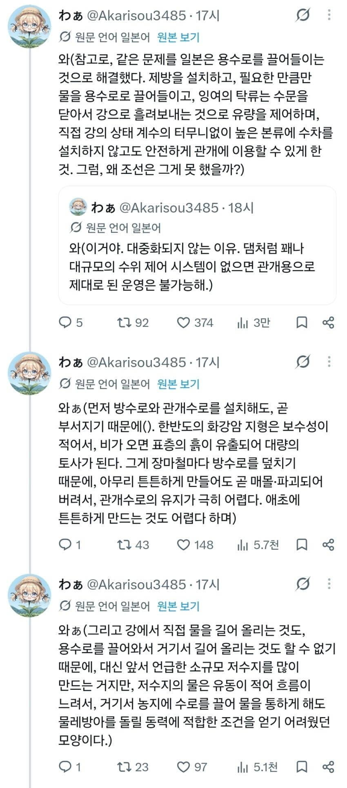
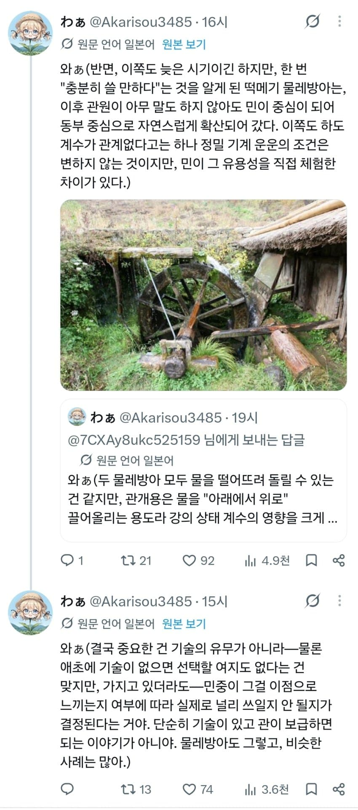
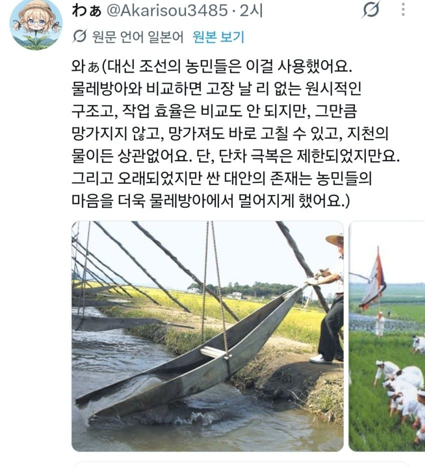
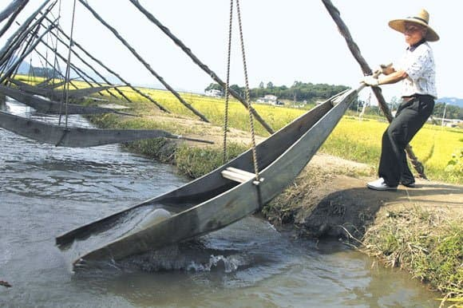
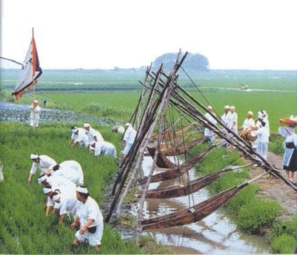
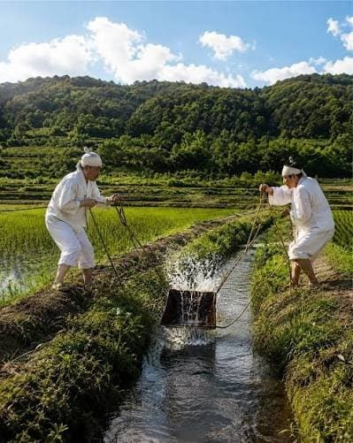
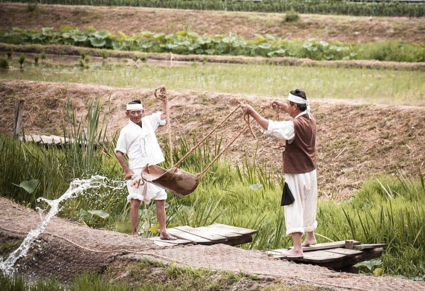

1. 한반도 지형이 개좆같다
2. 저수지를 만들어도 물레방어 돌릴 동력이 부족하다
3. 물레방아 자체 유지가 어렵다
어찌저찌 돌아가게해도 한반도 특유의 장마철만 되면 다 작살이 나는데 농민들이 한가한 사람도 아니고 장식품에 불과했다.

한반도 거주민들은 바보가 아니었다
복합적인 이유로 물레방아를 도입하지 않은거였고, 실제로 조선 동부 지역 (강원도 말하는거 같음)은 물레방아 수차를 잘 써먹었다.
결국 중요한건 기술의 유무가 아니라 기술이 쓸만한가의 문제였다





조선 농민들은 대신 이 방법을 이용해 물을 댔다
고장도 안나고 가격도 싸고 무엇보다 날씨에 상관없이 사용 가능했다.
조선시대 실학자들은 현장을 몰랐다.
미개한 농민들 어리석은 백성들 운운하며 수차를 도입해 굴려본 실학자들은 막상 현장에서 제대로 돌아가지 않는다는 문제를 발견하고 포기했다.
출처 : 수상할정도로 한국사를 잘 알고 있는 씹덕 일본인
댓글
수집 당시 댓글 346개
· ㅇㅇ · 11.12 08:56:20
· ㅇㅇ · 11.12 10:50:19
새벽에글쓰다가 · 11.12 08:38:42
2456778 · 11.12 08:39:25
ㅇㅇ · 11.12 08:56:40
ㅇㅇ · 11.12 09:09:24
· ㅇㅇ · 11.12 13:34:25
ㅇㅇ · 11.12 09:11:59
ㅇㅇ · 11.12 09:13:44
ㅇㅇ · 11.12 09:16:08
· ㅇㅇ · 11.12 09:28:46
· ㅇㅇ · 11.12 13:21:03
ㅇㅇ · 11.12 09:28:08
ㅇㅇ · 11.12 09:31:33
ㅇㅇ · 11.12 09:36:32
ㅇㅇ · 11.12 09:39:42
· ㅇㅇ · 11.12 09:55:56
· ㅇㅇ · 11.12 09:56:20
· ㅇㅇ · 11.12 09:57:09
· ㅇㅇ · 11.12 10:14:45
· ㅇㅇ · 11.12 10:44:34
ㅇㅇㅇ · 11.12 09:47:58
· ㅇㅇ · 11.12 10:38:05
· ㅇㅇ · 11.12 13:43:30
· ㅇㅇㅇ · 11.12 13:47:35
ㅇㅇ · 11.12 09:57:02
· ㅇㅇ · 11.12 09:58:28
ㅇㅇ · 11.12 09:59:10
ㅇㅇ · 11.12 10:00:35
· ㅇㅇ · 11.12 10:04:36
· ㅇㅇ · 11.12 13:44:47
· ㅇㅇ · 11.12 13:45:53
· ㅇㅇ · 11.12 16:49:13
ㅇㅇ · 11.12 10:08:33
ㅇㅇ · 11.12 10:12:35
· Machiavelli · 11.12 13:26:41
ㅇㅇ · 11.12 10:57:05
· ㅇㅇ · 11.12 11:15:13
· ㅇㅇ · 11.12 11:18:35
· ㅇㅇ · 11.12 11:19:58
· ㅇㅇ · 11.12 11:20:23
· ㅇㅇ · 11.12 11:21:56
· ㅇㅇ · 11.12 11:24:32
· ㅇㅇ · 11.12 11:25:39
· ㅇㅇ · 11.12 11:42:10
· ㅇㅇ · 11.12 12:05:39
· ㅇㅇ · 11.12 12:33:25
· ㅇㅇ · 11.12 12:33:39
· ㅇㅇ · 11.12 12:55:04
· ㅇㅇ · 11.12 13:15:51
· ㅇㅇ · 11.12 13:43:44
· ㅇㅇ · 11.12 14:01:10
· ㅇㅇ · 11.12 14:02:10
FT-FWMC · 11.12 11:18:27
· ㅇㅇ · 11.12 11:37:46
· ㅇㅇ · 11.12 14:14:06
ㅇㅇ · 11.12 11:20:41
· ㅇㅇ · 11.12 13:48:06
· ㅇㅇ · 11.12 14:20:09
ㅇㅇ · 11.12 11:43:45
· ㅇㅇ · 11.12 13:22:47
· ㅇㅇ · 11.12 15:27:24
· ㅇㅇ · 11.12 15:54:43
· ㅇㅇ · 11.12 16:13:15
· ㅇㅇ · 11.12 16:21:53
· ㅇㅇ · 11.12 17:12:26
· ㅇㅇ · 11.12 17:14:08
ㅇㅇ · 11.12 11:45:41
ㅇㅇㅇ · 11.12 11:59:41
dd · 11.12 12:47:04
dd · 11.12 12:49:02
ㅇㅇ · 11.12 12:52:12
ㅇㅇ · 11.12 13:24:48
무한탐구 · 11.12 13:30:04
ㅇㅇ · 11.12 13:33:51
· ㅇㅇ · 11.12 15:07:58
카야조아 · 11.12 14:21:48
ㅇㅇ · 11.12 14:23:35
· ㅇㅇ · 11.12 14:24:00
· ㅇㅇ · 11.12 14:24:59
ㅇㅇ · 11.12 14:31:41
· ㅇㅇ · 11.12 14:38:38
· ㅇㅇ · 11.12 15:05:09
· ㅇㅇ · 11.12 15:37:49
· ㅇㅇ · 11.12 15:55:31
문디배설 · 11.12 14:40:18
ㅇㅇ · 11.12 14:46:53
ㅇㅇ · 11.12 14:56:17
ㅇㅇ · 11.12 15:04:14
ㅇㅇ · 11.12 15:23:22
ㅇㅇ · 11.12 15:26:38
ㅇㅇ · 11.12 15:27:37
도태
한남
ㅇㅇ · 11.12 15:33:22
ㅇㅇ · 11.12 15:35:08
ㅇㅇ · 11.12 15:54:54
ㅇㅇ · 11.12 16:22:33
· ㅇㅇ · 11.12 16:24:05
· ㅇㅇ · 11.12 16:25:30
ㅇㅇ · 11.12 16:34:13
asas · 11.12 17:20:06
ㅇㅇ · 11.12 07:57:56
ㅇㅇ · 11.12 07:58:01
ㅇㅇ · 11.12 07:59:12
ㅇㅇ · 11.12 08:01:31
· ㅇㅇ · 11.12 08:02:02
· 수류탄이야 · 11.12 08:02:32
· ㅇㅇ · 11.12 08:03:30
· ㅇㅇ · 11.12 08:03:43
· ㅇㅇ · 11.12 08:04:36
· ㅇㅇ · 11.12 08:05:02
· ㅇㅇ · 11.12 08:05:26
· ㅇㅇ · 11.12 08:05:47
· ㅇㅇ · 11.12 08:06:04
· ㅇㅇ · 11.12 08:06:25
· ㅇㅇ · 11.12 08:06:37
· ㅇㅇ · 11.12 08:07:09
· ㅇㅇ · 11.12 08:07:21
· ㅇㅇ · 11.12 08:07:38
· ㅇㅇ · 11.12 08:07:55
· ㅇㅇ · 11.12 08:08:29
· ㅇㅇ · 11.12 08:08:51
· ㅇㅇ · 11.12 08:09:11
· ㅇㅇ · 11.12 08:09:29
· ㅇㅇ · 11.12 08:09:47
· ㅇㅇ · 11.12 08:09:58
· ㅇㅇ · 11.12 08:10:12
· ㅇㅇ · 11.12 08:10:57
· ㅇㅇ · 11.12 08:11:12
· ㅇㅇ · 11.12 08:11:26
· ㅇㅇ · 11.12 08:11:37
· ㅇㅇ · 11.12 08:12:02
· ㅇㅇ · 11.12 08:12:26
· ㅇㅇ · 11.12 08:12:50
· ㅇㅇ · 11.12 08:13:05
· ㅇㅇ · 11.12 08:13:19
· ㅇㅇ · 11.12 08:13:44
· ㅇㅇ · 11.12 08:14:01
· ㅇㅇ · 11.12 08:14:44
· ㅇㅇ · 11.12 08:14:59
· ㅇㅇ · 11.12 08:15:13
· ㅇㅇ · 11.12 08:15:26
· ㅇㅇ · 11.12 08:15:38
· ㅇㅇ · 11.12 10:02:03
· ㅇㅇ · 11.12 10:19:40
· ㅇㅇ · 11.12 10:21:35
· ㅇㅇ · 11.12 10:21:57
· ㅇㅇ · 11.12 10:23:05
· ㅇㅇ · 11.12 10:24:03
· ㅇㅇ · 11.12 10:29:13
· ㅇㅇ · 11.12 10:40:17
· ㅇㅇ · 11.12 10:42:01
· ㅇㅇ · 11.12 10:44:07
ㅇㅇ · 11.12 08:06:24
ㅇㅇ · 11.12 08:08:40
ㅇㅇ · 11.12 08:09:58
ㅇㅇ · 11.12 08:10:46
ㅇㅇ · 11.12 08:13:49
· ㅇㅇ · 11.12 08:17:29
· ㅇㅇ · 11.12 08:47:28
· ㅇㅇ · 11.12 08:47:55
· ㅇㅇ · 11.12 10:27:29
· ㅇㅇ · 11.12 12:09:40
· ㅇㅇ · 11.12 13:33:02
ㅇㅇ · 11.12 08:14:02
ㅇㅇ · 11.12 08:16:27
· ㅇㅇ · 11.12 08:19:22
· ㅇㅇ · 11.12 08:20:06
· ㅇㅇ · 11.12 13:46:34
· ㅇㅇ · 11.12 14:16:02
ㅇㅇ · 11.12 08:16:57
· ㅇㅇ · 11.12 08:20:12
· ㅇㅇ · 11.12 08:20:48
· ㅇㅇ · 11.12 08:29:09
· ㅇㅇ · 11.12 08:30:40
· ㅇㅇ · 11.12 08:32:58
· ㅇㅇ · 11.12 08:37:25
· ㅇㅇ · 11.12 10:15:57
ㅇㅇ · 11.12 08:19:28
ㅎㅎ · 11.12 08:23:14
· Machiavelli · 11.12 13:23:57
ㅇㅇ · 11.12 08:24:53
ㅇㅇ · 11.12 08:25:11
ㅇㅇ · 11.12 08:27:53
ㅇㅇ · 11.12 08:28:35
· ㅇㅇ · 11.12 08:29:40
· ㅇㅇ · 11.12 08:29:59
· ㅇㅇ · 11.12 08:30:16
ㅇㅇ · 11.12 08:30:59
· ㅇㅇ · 11.12 14:22:40
ㅇㅇ · 11.12 08:31:59
· ㅇㅇ · 11.12 08:43:43
· ㅇㅇ · 11.12 08:50:10
· ㅇㅇ · 11.12 08:51:09
· ㅇㅇ · 11.12 09:03:28
· ㅇㅇ · 11.12 11:10:25
· ㅇㅇ · 11.12 11:12:30
ㅇㅇ · 11.12 08:37:02
· ㅇㅇ · 11.12 08:41:05
· ㅇㅇ · 11.12 08:43:13
· ㅇㅇ · 11.12 08:52:58
캘리포니아호두가싼이유 · 11.10 14:03:46
· ㅇㅇ · 11.12 07:39:27
· ㅇㅇ · 11.12 08:01:28
· ㅇㅇ · 11.12 08:09:54
· ㅇㅇ · 11.12 08:10:46
어떻게 갤이름이 원종갤ㅋㅋㅋ
ㅇㅇ · 11.10 14:06:54
· ㅇㅇ · 11.10 16:09:16
· ㅇㅇ · 11.10 16:26:59
· ㅇㅇ · 11.10 16:27:58
· ㅇㅇ · 11.12 07:38:31
· ㅇㅇ · 11.12 07:46:01
· 안될거뭐있노. · 11.12 07:48:29
· ㅇㅇ · 11.12 08:04:30
· ㅇㅇ · 11.12 08:22:36
ㅇㅇ · 11.10 15:10:39
ㅇㅇ · 11.10 17:03:24
땨뗘(봇) · 11.12 07:30:06
ㅇㅇ · 11.12 07:31:46
PPAPEE · 11.12 07:33:05
쿠트라 · 11.12 07:33:38
ㅇㅇ · 11.12 07:34:55
ㅇㅇ · 11.12 07:35:01
· ㅇㅇ · 11.12 07:36:45
· ㅇㅇ · 11.12 07:38:07
· ㅇㅇ · 11.12 07:40:27
· ㅇㅇ · 11.12 07:41:36
· ㅇㅇ · 11.12 07:41:45
· ㅇㅇ · 11.12 07:42:14
· ㅇㅇ · 11.12 07:44:07
· ㅇㅇ · 11.12 07:45:32
· ㅇㅇ · 11.12 07:46:05
· ㅇㅇ · 11.12 07:46:25
· ㅇㅇ · 11.12 07:46:39
· ㅇㅇ · 11.12 07:47:00
· ㅇㅇ · 11.12 07:47:10
· ㅇㅇ · 11.12 07:47:26
· ㅇㅇ · 11.12 07:47:35
· ㅇㅇ · 11.12 07:47:47
· ㅇㅇ · 11.12 07:47:58
· ㅇㅇ · 11.12 07:48:11
· ㅇㅇ · 11.12 07:48:20
· ㅇㅇ · 11.12 08:35:49
· ㅇㅇ · 11.12 08:46:38
· ㅇㅇ · 11.12 08:48:04
· ㅇㅇ · 11.12 08:48:39
· ㅇㅇ · 11.12 08:56:28
ㅇㅇ · 11.12 07:35:51
· ㅇㄹㅇ · 11.12 08:24:01
· ㅇㅇ · 11.12 08:25:09
· ㅇㄹㅇ · 11.12 08:30:23
· ㅇㅇ · 11.12 08:39:07
· ㅇㅇ · 11.12 08:39:30
ㅇㅇ · 11.12 07:36:36
· ㅇㅇ · 11.12 07:36:46
ㅇㅇ · 11.12 07:37:17
ㅇㅇ · 11.12 07:40:49
· ㅇㅇ · 11.12 07:47:54
· ㅇㅇ · 11.12 08:00:25
· ㅇㅇ · 11.12 08:10:20
· ㅇㅇ · 11.12 08:25:49
· ㅇㅇ · 11.12 08:26:24
ㅇㅇ · 11.12 07:41:55
ㅇㅇ · 11.12 07:45:20
· ㅇㅇ · 11.12 08:01:19
삭제됨 · 11.12 07:46:11
· ㅇㅇ · 11.12 07:47:12
· ㅇㅇ · 11.12 07:51:19
· ㅇㅇ · 11.12 07:57:44
· ㅇㅇ · 11.12 08:02:05
· ㅇㅇ · 11.12 08:05:43
· ㅇㅇ · 11.12 08:09:03
· ㅇㅇ · 11.12 08:10:14
· ㅇㅇ · 11.12 08:11:58
· ㅇㅇ · 11.12 08:15:23
· ㅇㅇ · 11.12 08:15:55
· ㅇㅇ · 11.12 08:19:53
· ㅇㅇ · 11.12 08:21:25
· ㅇㅇ · 11.12 08:22:48
· ㅇㅇ · 11.12 08:28:50
쫵쫵 · 11.12 07:47:09
ㅇㅇ · 11.12 07:47:55
· ㅇㅇ · 11.12 07:49:28
· ㅇㅇ · 11.12 07:55:30
· ㅇㅇ · 11.12 07:56:21
· ㅇㅇ · 11.12 08:50:32
ㅇㅇ · 11.12 07:48:35
· ㅇㅇ · 11.12 07:48:44
ㅇㅇ · 11.12 07:48:40
· ㅇㅇ · 11.12 07:50:24
ㅇㅅㅇ · 11.12 07:49:01
Vanitatum · 11.12 07:49:20
ㅇㅇ · 11.12 07:50:28
ㅇㅇ · 11.12 07:51:30
· ㅇㅇ · 11.12 07:59:20
ㅇㅇ · 11.12 07:51:41
· ㅇㅇ · 11.12 07:59:10
ㅇㅇ · 11.12 07:52:31
· ㅇㅇ · 11.12 07:53:01
· 수류탄이야 · 11.12 08:01:51
ㅇㅇ · 11.12 07:57:35
ㅇㅇ · 11.10 12:32:46
ㅇㅇ · 11.10 12:34:18
· ㅇㅇ · 11.10 12:38:14
· ㅇㅇ · 11.10 12:57:24
· ㅇㅇ · 11.10 12:59:00
· 산데비스탄 · 11.10 13:09:49
· ㅇㅇ · 11.10 13:41:53
· ㅇㅇ · 11.10 14:41:37
· 점심병장 · 11.10 16:22:14
· 개똥철학적사고방식 · 11.10 18:01:16
· ㅇㅇ · 11.12 07:35:24
ㅇㅇ · 11.10 12:36:38
· 디비자 · 11.10 15:52:30
ㅇㅇ · 11.10 12:37:46
ㅇㅇ · 11.10 12:37:49
ㅇㅇ · 11.10 12:39:17
ㅇㅇ · 11.10 12:40:57
· ㅇㅇ · 11.10 12:43:17
· 치킨트레이더 · 11.10 12:54:03
· ㅇㅇ · 11.10 13:02:16
· sakuri · 11.10 13:11:29
· ㅇㅇ · 11.12 07:51:29
ㅇㅇ · 11.10 12:41:28
ㅇㅇ · 11.10 12:44:18
ㅇㅇ · 11.10 12:46:17
· 아우스레제 · 11.10 12:47:26
· ㅇㅇ · 11.10 12:48:04
· ㅇㅇ · 11.10 12:51:37
· ㅇㅇ · 11.10 12:51:46
· ㅇㅇ · 11.10 12:53:10
· 시립 · 11.10 13:11:25
· ㅇㅇ · 11.10 21:54:56
· ㅇㅇ · 11.12 07:38:15
ㅇㅇ · 11.10 12:52:32
ㅇㅇ · 11.10 12:53:58
· ㅇㅇ · 11.10 13:00:16
· ㅇㅇ · 11.10 13:00:49
· ㅇㅇ · 11.10 13:04:59
· 낭만원툴 · 11.10 13:24:27
· ㅇㅇ · 11.12 07:38:33
· ㅇㅇ · 11.12 07:49:47
ㅇㅇ · 11.10 12:54:08
· ㅇㅇ · 11.10 12:56:58
수류탄이야 · 11.10 12:56:10
멜트다운 · 11.10 13:04:20
대린이사냥꾼 · 11.10 13:27:54